O que foi feito
DUAS VISÕES
Painel de controle para o juiz e tela pública para a TV, com estado compartilhado em tempo real.
Sistema de placar e gerenciamento de partidas desenvolvido para a atividade de Sumô de Robôs da Casa Aberta SENAC. O juiz controla a competição pelo celular e o público acompanha as informações na TV com atualização em tempo real.
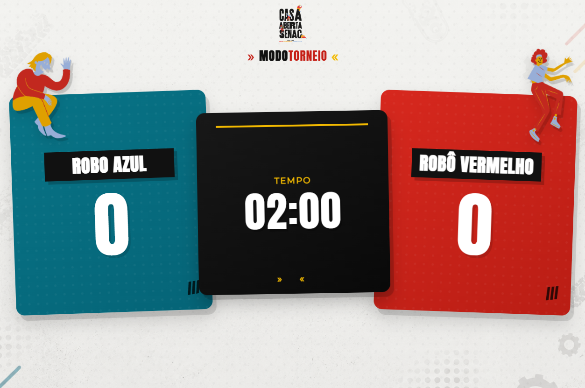
O que este projeto resolve
Uma única aplicação para controlar partidas, organizar participantes e comunicar o estado da competição para quem está na arena e para quem está assistindo.
O que foi feito
Painel de controle para o juiz e tela pública para a TV, com estado compartilhado em tempo real.
Como foi feito
Servidor Node.js com Socket.IO centralizando cronômetro, placar, fila e ranking.
Qual foi o resultado
Mais de 100 partidas apoiadas, mais de 300 pessoas alcançadas e uso em três turnos.
01 · Contexto
Durante a Casa Aberta, a atividade de Sumô de Robôs exigia uma operação contínua: partidas em sequência, participantes esperando sua vez, público acompanhando de diferentes pontos da arena e juízes realizando comandos rapidamente.
O placar precisava ser compreendido a metros de distância, em uma TV.
O comando do juiz precisava refletir rapidamente na tela pública.
A interface precisava funcionar sob pressão, com poucos passos e botões grandes.
O modo Freestyle precisava organizar a fila e manter o ranking dos tempos.
02 · Engenharia
O servidor é a fonte de verdade da competição. O painel envia comandos, o servidor atualiza o estado e transmite o resultado para as telas conectadas.
controle.htmlranking.jsonindex.htmlranking.json: configurações, ranking Freestyle e fila sobrevivem a reinícios.03 · Experiência
Duas interfaces para necessidades diferentes: o público precisa enxergar de longe; o juiz precisa agir rapidamente.
Elementos grandes, contraste alto e foco nas informações essenciais da partida.
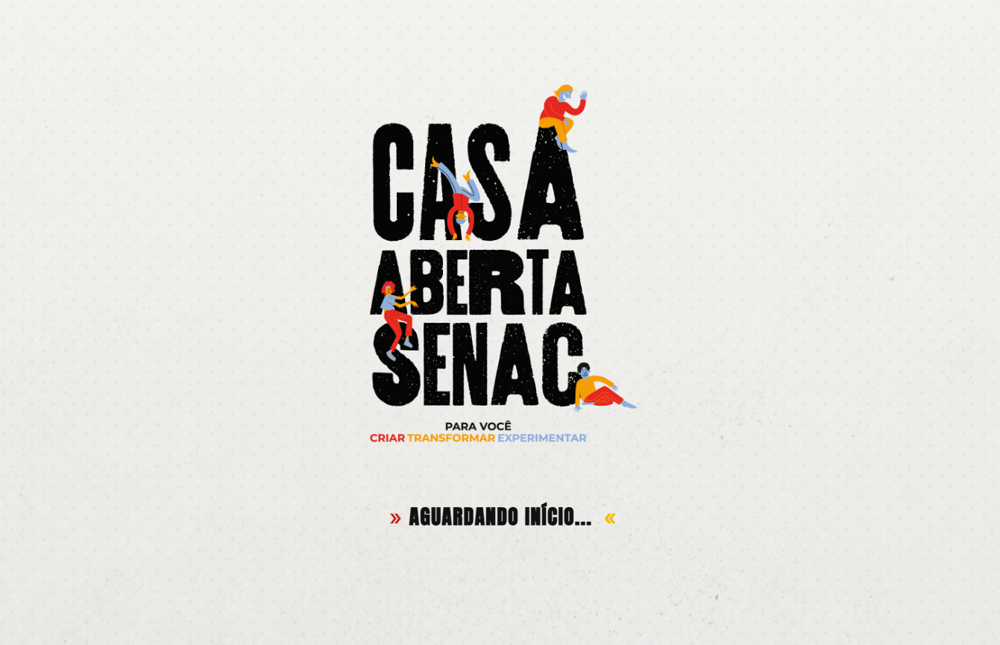
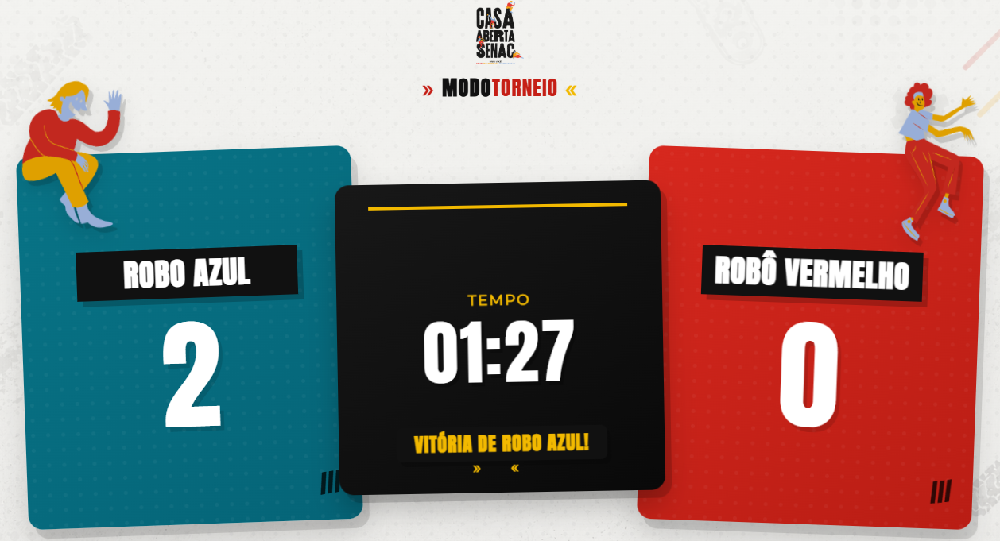
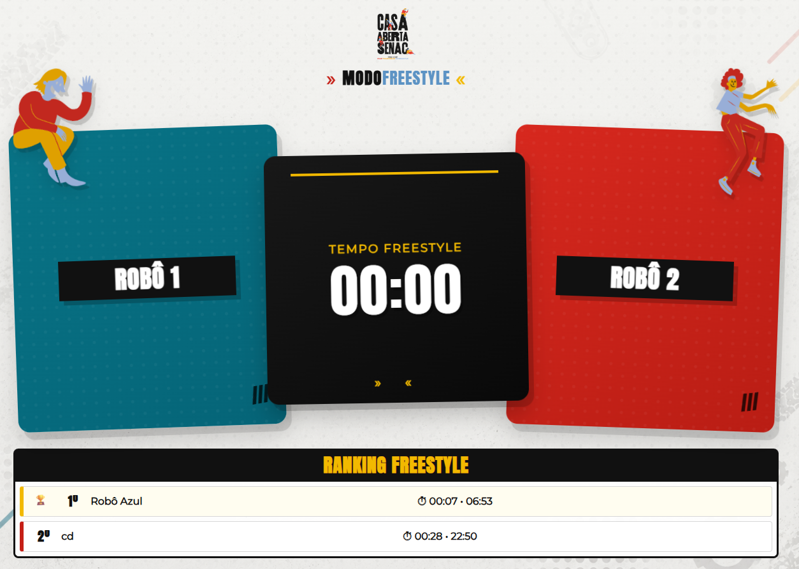
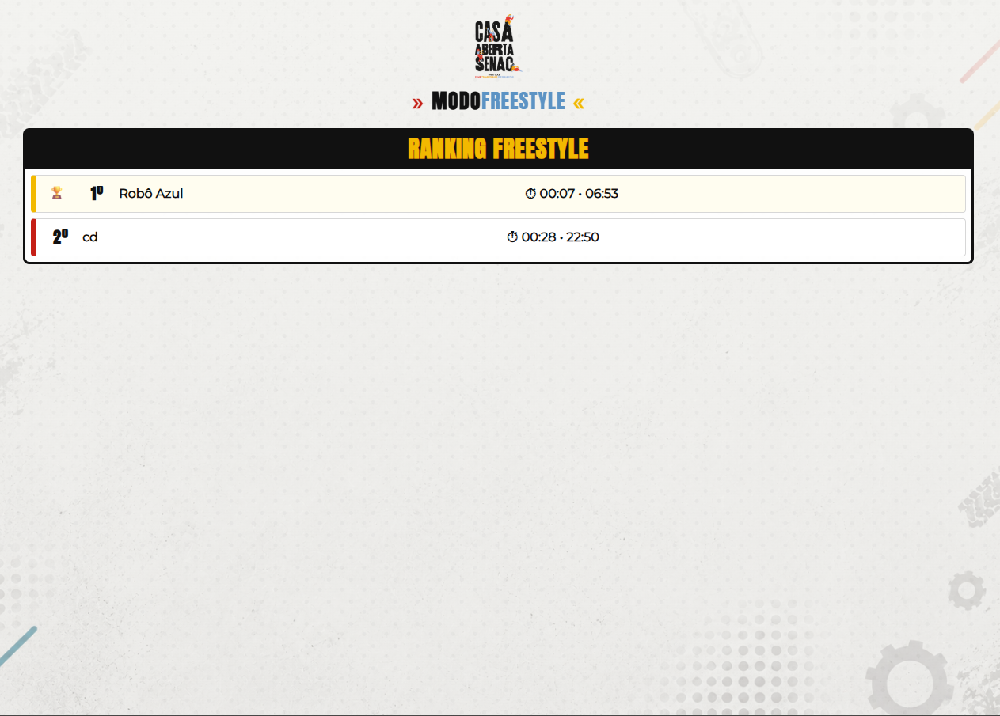
Projetado para smartphone, com ações grandes, rótulos diretos e comandos críticos visualmente diferenciados.
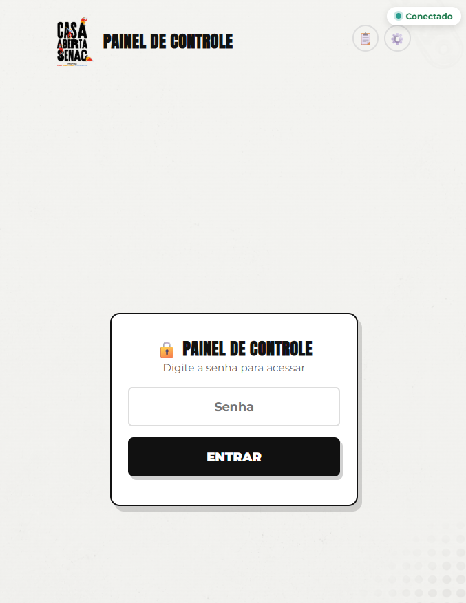
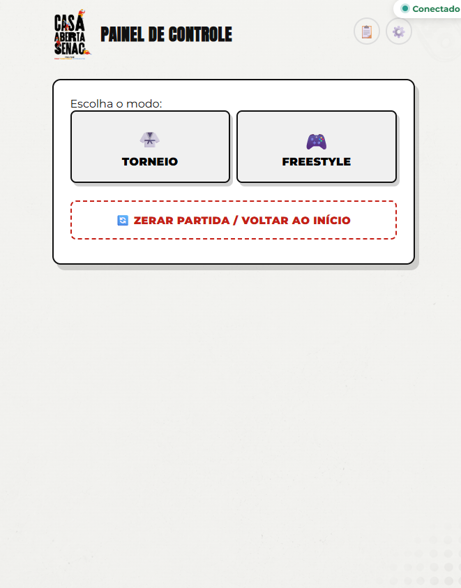
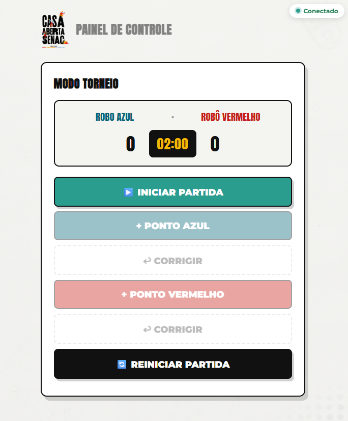
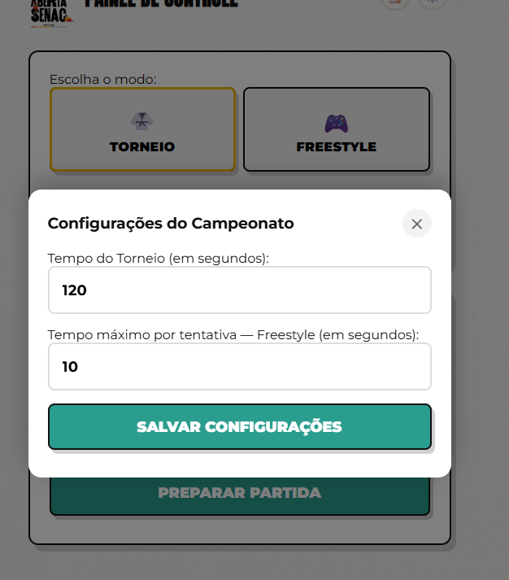
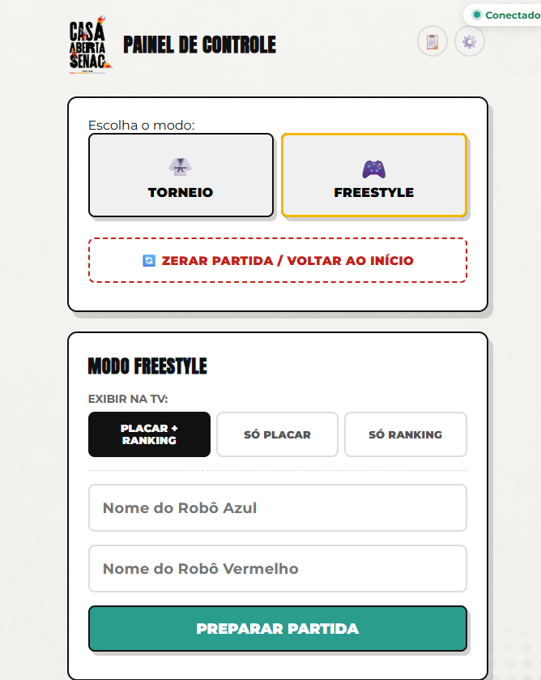
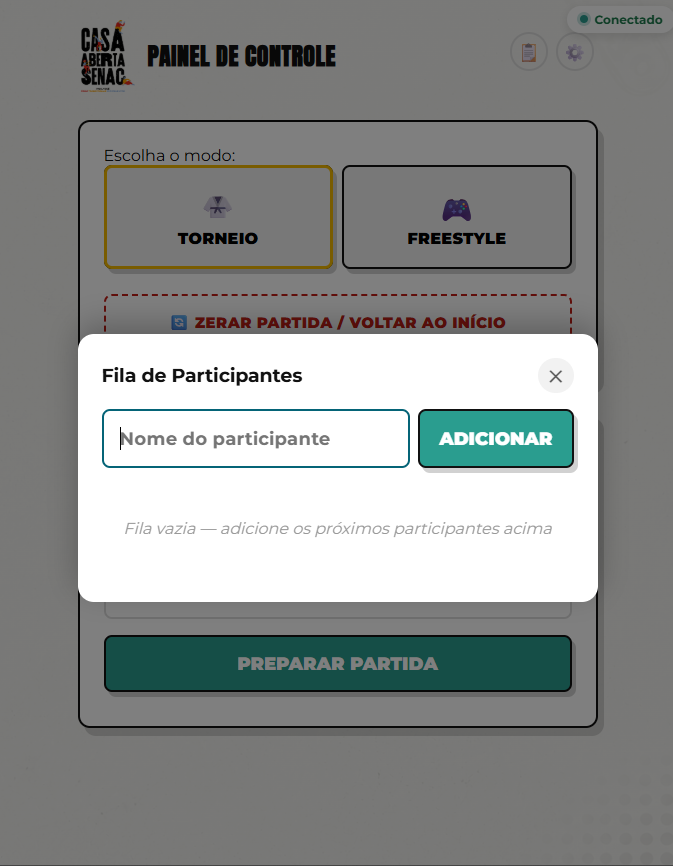
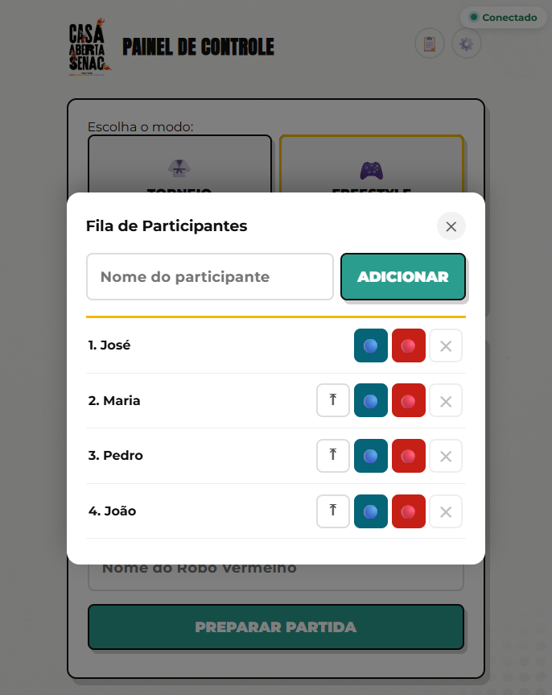
04 · O projeto em operação
O painel saiu do contexto de desenvolvimento e foi utilizado como ferramenta operacional durante a Casa Aberta SENAC, apoiando a atividade de Sumô de Robôs em três turnos diferentes.
Uso em contexto real
A aplicação ajudou a organizar a sequência de partidas, atualizar os resultados para o público e reduzir tarefas manuais para professores e juízes.
Partidas apoiadas
100+
Partidas de Sumô de Robôs conduzidas com apoio do painel.
Pessoas alcançadas
300+
Entre jogadores e plateia acompanhando a atividade.
Equipe apoiada
10+
Professores e juízes com uma operação mais centralizada.
Operação
3
Turnos diferentes de funcionamento durante o evento.
Antes
Configuração dos tempos, preparação das partidas e organização da fila de participantes.
Durante
Juízes registrando pontos e resultados pelo celular enquanto a TV mantinha o público atualizado.
Resultado
A mesma aplicação sustentou a operação em três turnos, mantendo dados e fluxo da competição centralizados.
05 · Resultado
Pontos, cronômetro e resultado são refletidos na TV a partir das ações realizadas no painel.
Fila de participantes e ranking Freestyle reduzem dependência de controles manuais durante a operação.
Configurações, fila e ranking são persistidos em disco e podem ser recuperados após reinicializações.
Aprendizados
Separar as visões do público e do operador simplificou as decisões de interface. Manter o estado da competição no servidor tornou a tela pública independente do dispositivo do juiz e facilitou a operação contínua do evento.
06 · Evolução
ranking.json para um banco SQL com histórico por edição do evento.